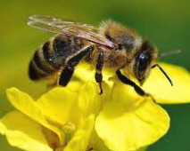
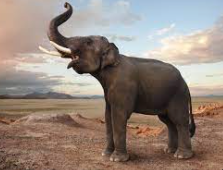

Факт 1: Бджоли вміють розпізнавати людські обличчя
Дослідження показують, що бджоли можуть розпізнаватилюдські обличчя на фотографіях.
ще факти про Бджіл
- Бджоли - незамінні запилювачі: Бджоли грають надзвичайно важливу роль у природних екосистемах, запилюючи квіти і допомагаючи розмножувати багато рослин. Без їхньої праці багато видів рослин не могли б продовжувати своє існування.
- Соціальні комахи: Бджоли живуть у складних суспільствах, де кожна особинка виконує свою роль. У бджолиних сім'ях є матка, робочі бджоли та самці-трутні. Кожен клас має свої функції, що забезпечують добробут колонії.
- Виробництво меду: Бджоли є головними виробниками меду, цінного продукту, що має багато корисних властивостей для здоров'я людини. Вони збирають нектар з квітів та переробляють його у мед у своїх вуликах, що є унікальним процесом, який залежить від майстерності та наполегливості бджіл.
Факт 2: Слони мають неймовірну пам'ять
Слони можутьзапам'ятовувати кожну людину, з якою коли-небудь зустрічалися.
ще факти про Слонів
- Найбільші суходолні тварини: Слони - найбільші суходолні ссавці на планеті. Вони можуть досягати ваги більше 5 тонн та висоти у плечах понад 3 метри.
- Соціальні та емоційні істоти: Слони відомі своєю високою соціальною організацією та емоційним інтелектом. Вони проявляють відчуття сімейної спільноти, турботливо ставляться до малюків і навіть проявляють смуток та відданість відносно померлих членів своєї групи..
- Велика міграція та зв'язок з екосистемою: Слони грають ключову роль у підтримці екосистем. Їхня міграція допомагає розповсюджувати насіння та зберігати рівновагу в лісових та саванних середовищах. Крім того, вони впливають на ландшафт шляхом обрізання дерев та створення водних ділянок.